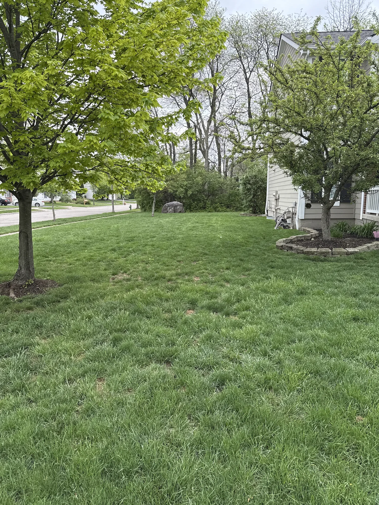
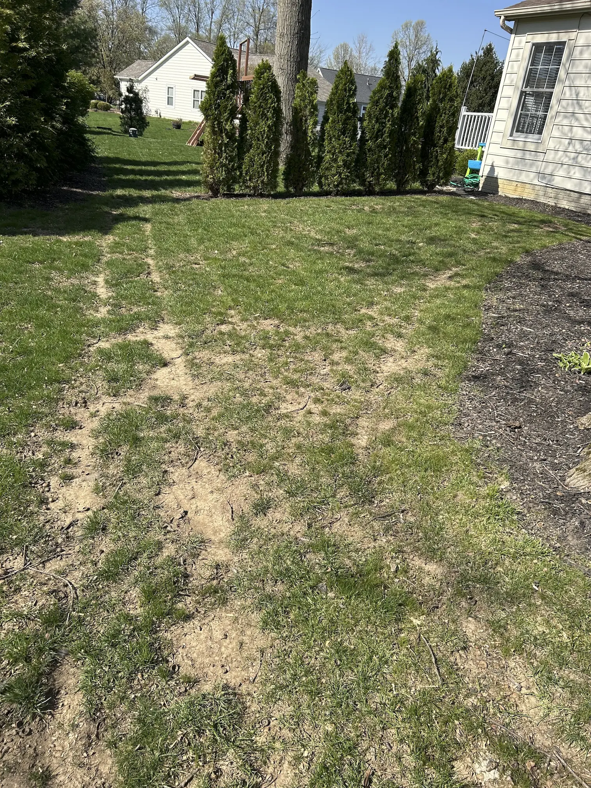
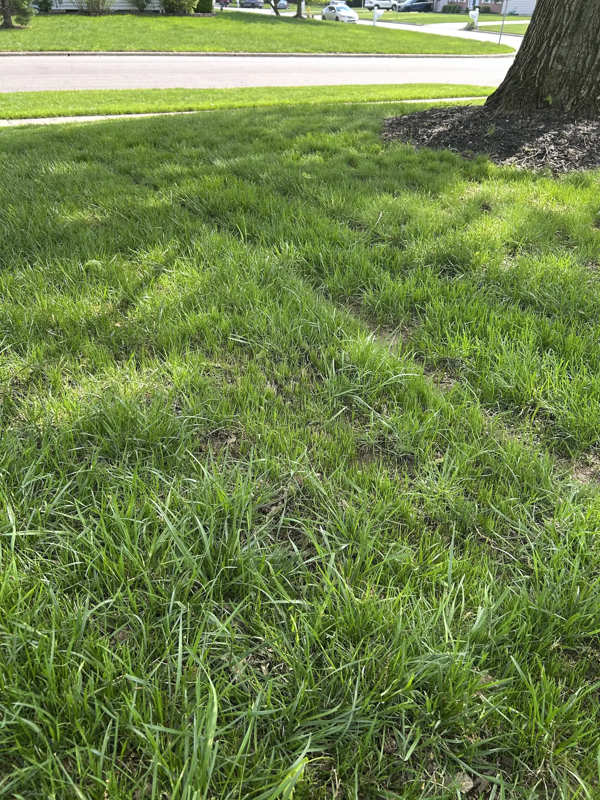

Before

After


Grow a Thicker, Greener, Healthier Lawn.
740-729-0520LAWN RENEWAL IN THE COLUMBUS AREA
Frailey Lawn Renewal combines dethatching, precision seeding and targeted lawn treatment to help thin or damaged grass grow back fuller and healthier.
Now booking fall seeding — limited slots, mid-August through September.
Most lawns run $600–$1,400.
New customers also receive 15% off their first service.
Real results
A closer look at lawns before and after my renewal process.





How it works
Each step is designed to improve seed-to-soil contact, promote stronger growth and reduce common lawn problems.
I remove matted grass and excess thatch so seed, water and nutrients can reach the soil more effectively.
Golf-course-quality equipment places seed directly into the ground at a consistent depth for better germination.
Fertilizer supports new growth while weed prevention helps defend the lawn from crabgrass and summer weeds.
Services
Whether your lawn needs a complete renovation or attention to problem areas, I offer services designed to restore healthy, thick, green grass.
Give your lawn a fresh start after winter with professional slit seeding that encourages thicker, healthier growth.
The ideal season for establishing strong new grass with cooler temperatures and excellent growing conditions.
Repair bare patches, pet damage, traffic wear, and other thin areas without renovating the entire lawn.
Remove excessive thatch buildup to improve airflow, water penetration, and seed-to-soil contact.
Frailey Lawn Renewal provides slit seeding, slice seeding, overseeding, dethatching and lawn renovation in Columbus, Westerville, New Albany, Powell, Dublin, Galena, Sunbury, Lewis Center and Blacklick.